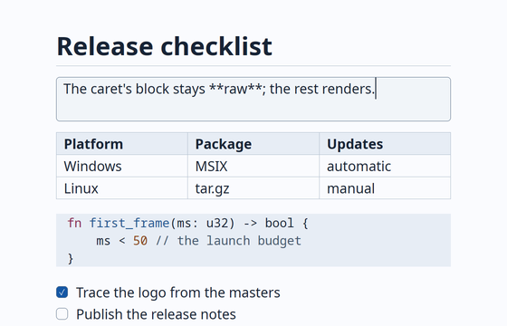
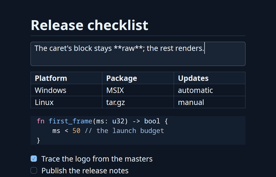

Write faster.
Think further.
A markdown editor that gets there before you do.
Tachyon opens into a resident instance in 20–35 ms, paints every keystroke inside a single frame, and edits gigabyte-scale files without a stall.
- InstantOpens in 20–35 ms
- Pure MarkdownPlain .md, no lock-in
- Distraction-freeOne pane, no clutter


Speed is the feature
Tachyon is native Rust on GPUI, rendering straight to the GPU: DirectX on Windows, Vulkan on Linux, Metal on macOS. Every budget below is a requirement in Tachyon's own repository, checked in CI. A change that regresses one needs a recorded decision before it can land: these aren't targets, they're gates.
| Budget | Target | Measured |
|---|---|---|
| Launch → first frame (resident instance) | p95 < 50 ms | 20–35 ms across runs |
| Keystroke reparse, 1 MB document | p99 < 0.5 ms | 45–55 µs p99 |
| Key to painted pixel, 1 MB document | within one frame | ≤ 3 ms on Windows |
| Paste of 5 MB of text | no frame over 16.7 ms | 5–9 ms worst frame |
Reference machine: Windows 11, Core Ultra 7 155H, Intel Arc graphics, 4K display. Numbers are measured, not estimated.
Resident mode is why launch feels instant
A resident Tachyon keeps a window ready in the background, so opening a file just shows it; between uses it waits in the tray on 16 MB of memory, less than a single browser tab. Skip that (a cold, direct launch) and GPU and font initialization alone cost hundreds of milliseconds. Both bars are Tachyon; no other editor is involved. They run in real time: watch the gap, not just the numbers.
Both bars are Tachyon, on the same reference Windows PC: one launching into a resident instance (the default), one launching cold. Bar length is proportional to milliseconds, capped at 450 ms; each bar fills over its own real measured duration.
Against the editors you already have
Tachyon 1.0 and six editors on the same Windows 11 laptop, run one at a time with the same scripts. The best result in each column is highlighted, whichever editor it belongs to. Where an editor couldn't do something, the table says so instead of showing a number.
| Editor | Cold launch | Warm launch | Memory, 5 KB note | 200 MB log | Typing, 20 MB .md |
|---|---|---|---|---|---|
| Tachyon 1.0 | 199 ms | 55 ms | 18 MB | 1.8 s | 73 ms |
| Notepad++ 8.9 | 372 ms | 87 ms | 16 MB | 1.5 s | 4.2 s |
| Windows Notepad 11 | 436 ms | 120 ms | 35 MB | 28 s | keys lost |
| VS Code 1.139 | 1.46 s | 473 ms | 1,002 MB | 5.1 s | 108 ms |
| Obsidian 1.13 | 934 ms | 221 ms | 178 MB | won't open .log | renderer crashed |
| Typora 1.14 | 1.42 s | 1.05 s | 220 MB | won't open .log | "too large to render" |
| MarkText 0.19 | 1.50 s | 557 ms | 177 MB | opened an empty window | stopped at 6 GB RAM |
Core i7-7820HQ, 32 GB, Intel HD 630, 1080p at 125 %, Windows 11 26H2; OS file cache warm. Launch: process start to a window titled with the file, median of 5 (cold) or 10 (warm: app already running, file opened again from its command line; Tachyon's warm launch is its resident instance, the default on Windows). Memory: private working set of the whole process tree, 10 s after loading. Log: 200 MB, 1.6 M lines, launch until its last line is on screen. Typing: 20 characters at ~60 ms each at the end of a 20 MB Markdown file, last key to all of them on screen. Every editor ran under a watchdog that ends it above 6 GB of RAM in use (working set) or 8 GB committed, to protect the test machine; MarkText passed the 6 GB RAM limit twice while still loading the 20 MB file. Tray: resident Tachyon with no windows, 16 MB private working set, against one Edge tab on github.com at 100 MB. Full method, versions and raw data.
What it actually looks like
Real captures of Tachyon on Linux, rendered at 2x. Same binary, same editor, no mockups.


The block under your caret is always raw
This is the same editing model Tachyon uses, in a few lines of HTML and CSS. Tab or click into a line: it drops to raw Markdown so you can edit it; every other line stays rendered. Works with the keyboard, works with the mouse, works with no script at all.
Try it: Tab into the card, then ↓ / ↑ to move the caret between lines.
Logs that hang most editors just open
Files stream in from disk in chunks instead of loading into one giant string, and only what's on screen is fully parsed. A file over 2 GiB is refused outright, with a message, instead of risking a crash.
What most editors do with a huge log
- A 200 MB log is loaded whole before anything is shown
- The window stops responding while it reads and lays out the file
- A single very long line can make layout itself pathological
What Tachyon measures
- A 200 MB log opens in ≈400 MB of memory, window responsive throughout
- A 1 GB log opens in ≈1.4 GB, still responsive
- A 20 MB single-line file stays under 13 ms per frame
- Edits and undo on a huge log paint in 1–2 ms
A 15 MiB Markdown file shaped like one giant fenced code block used to peak near 5.7 GB of memory. Streamed block windows bring that down to about 300 MB.
Files above this size are refused with a clear message on open, rather than exhausting memory or crashing.
Typing and undo on a multi-hundred-megabyte log still paint in one to two milliseconds, not seconds.
A scratchpad that grew up
Everyday editing, without leaving the performance budgets above.
Command palette
Every command and setting in one filterable list, each with its shortcut. Quick open jumps straight to a recent file.
Find & replace
Replace All rewrites every match as a single undo step, even across hundreds of thousands of hits.
Go to heading
Filter the document's headings and jump straight there.
Open recent
Pick from your last 30 files, filtered as you type. On Windows, the latest 10 are also in the taskbar jump list.
Plain-text mode
Non-Markdown files open literally, syntax hidden nowhere. Toggle any document between the two.
Copy as HTML
Rendered rich text, ready to paste into Word, Outlook or Teams on Windows.
Sticky notes
Quick, autosaved notes in compact always-on-top windows, from a global hotkey or the tray.
Settings
Theme, zoom, hot exit and tips live in a plain settings.toml; the palette changes them too.
Zoom
50% to 300% per window; text, indents and spacing scale together.
Hot exit
Quit never asks. Unsaved documents come back exactly as you left them.
Lists that keep up
Enter continues bullets, numbers and task boxes; Tab nests, renumbering as it goes.
Highlighted code
Fenced blocks light up in both themes: Rust, Python, JS/TS, C-family, Go, Java, C#, shells, PowerShell, SQL, JSON, TOML, YAML.
Follows the system
Light and dark themes track the OS, or a setting, live.
Links, images, math
Ctrl+click follows a link; local images render inline; math renders too.
Reloads under you
A file changed by another program reloads automatically when there's nothing unsaved to lose.
Windows tray icon
A resident Tachyon lives in the tray: new window, sticky note, About, or quit, without hunting for a taskbar entry.
Install Tachyon
Windows
Auto-updateMSIX, with automatic updates: open Tachyon.appinstaller (the button below) and follow the prompt. Also available as a plain .zip. Both are signed with Azure Trusted Signing.
Linux
.tar.gz archive; extract and run. tachyon --desktop-entry on adds it to your launcher and "Open with" menus.
macOS
.tar.gz archive. Not signed or notarized yet, so Gatekeeper will warn on first launch.
Each release ships a SHA256SUMS.txt alongside the archives, so you can verify what you downloaded before you run it.
Build from source
Needs the Rust toolchain pinned in rust-toolchain.toml (installed automatically by rustup) and, on Linux, a handful of system libraries for GPUI.
# Linux (Debian/Ubuntu) build dependencies sudo apt-get install libxkbcommon-x11-dev libwayland-dev libxcb1-dev \ libx11-xcb-dev libfontconfig-dev libfreetype-dev libvulkan-dev libzstd-dev # clone, then run cargo run --release -- notes.md
MIT OR Apache-2.0
Tachyon is early: block-swap editing, saving, find and replace, large-file handling and Windows distribution are working today; macOS signing and a few other items are still open on the roadmap.
Dual licensed
Use Tachyon under either the MIT license or the Apache License, Version 2.0, at your option.
Contribute
Issues, pull requests and design discussion happen on GitHub. Read CONTRIBUTING.md before opening a PR.